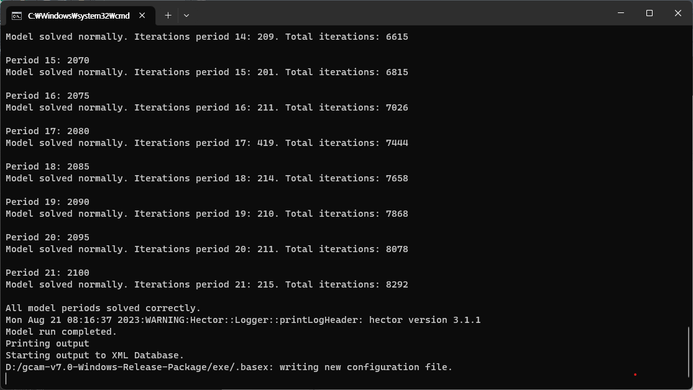

1 Core Model Proposal #359: Hydrogen and transportation technology update
1.1 Transportation
- Natural Gas Vehicles(NGV)
- Light-duty vehicles
- 지역별로 LDV의 사이즈를 4개씩 구분하였고, 각각의 배터리 용량(kwh poer vehicle) 제시
- BEV battery pack costs는 2020 BNEF EV Outlook에서 가져옴
- cost mark-up??
- Fuel cell stack costs는 NREL, 2020 Transportation Annual Technology Baseline에서 가져옴
2 transportation_UCD_CORE_CurPol_Korea_Dawoon
- region : South Korea
- supplysector :
- 항공 :
- aviation_intl
- 화물 :
- freight
- freight_road
- 여객 :
- pass_road
- pass_road_LDV
- pass_road_LDV_4W
- 해운 :
- shipping_intl
- 항공 :
- energy_final_demand
- 항공:
- aviation_intl
- 화물:
- freight
- 여객:
- pass
- 해운:
- shipping_intl
- 항공:
- supplysector :
- gcam-7의 transportation_UCD_CORE.xml과 비교해보니, supplysector, energy-final-demand의 구성 name은 동일함
- The most common failure to run GCAM when double clicking the run-gcam executable script typically relate to Java.
- model running 테스트

- Model run 결과는 exe - log - main_log.txt 에서 확인 가능
- output - queries
- ModelInterface - run-model-interface.bat